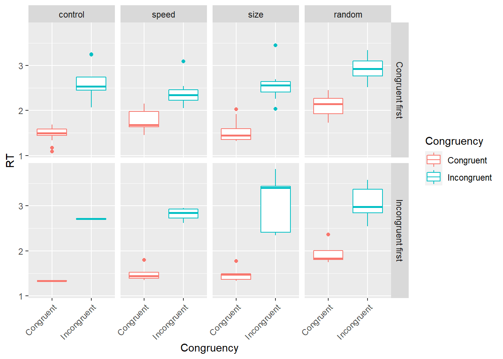
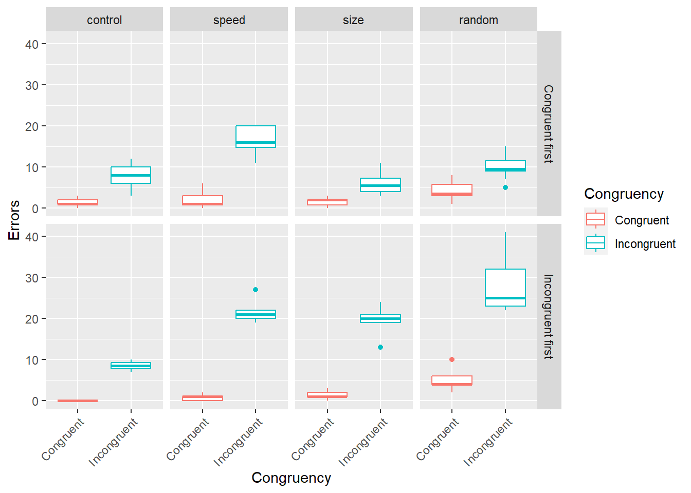
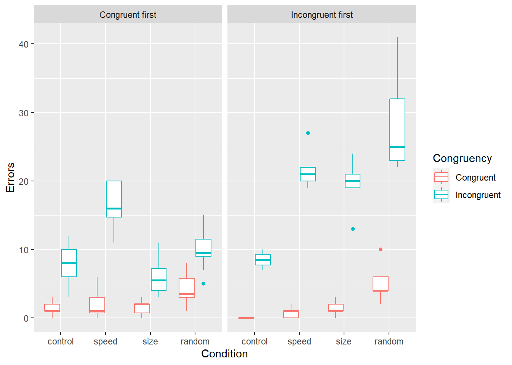
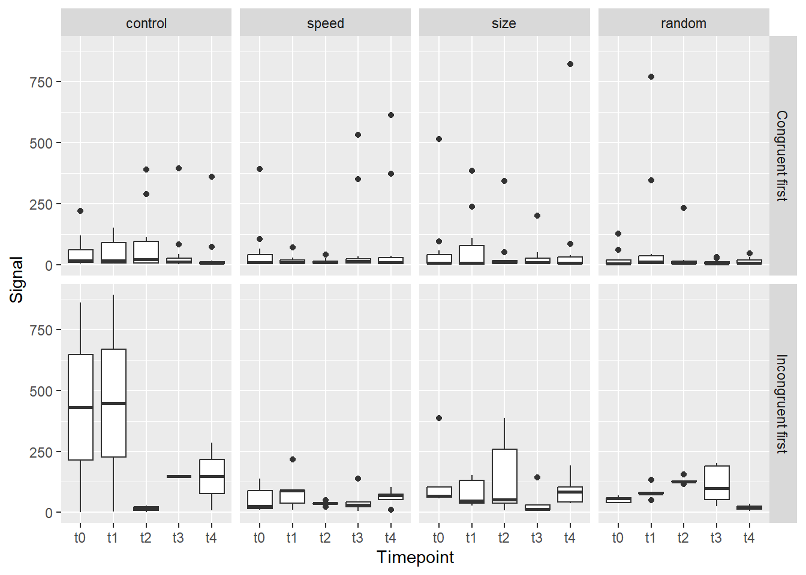

Seminar 15 Practice
Today we will practice tidying up and plotting an almost real data. The structure of the table is real, I’ve used it precisely because it is a sort of messy, untidy data you often get. The actual values are, however, fake. Well, not fake, simulated! But that means that you should not use this particular data to make any inferences about Stroop task, which is what the original experiment was about.
Here is the back story. Once upon a time, an experiment with the Stroop task was performed. There four different conditions, one control one, of course. And a continuous physiological signal (similar to skin conductance) was measured at five time points: 0) sometime before the task, 1) right before the task, 2) after first block, 3) after the second block, 4) 15 minutes after the task. What we would like to establish:
- Did the task work in principle? I.e., do we see more errors and longer response times for when color and word were incongruent?
- Was there an effect of conditions on either the error count or response times?
- Was out physiological signal different at different time-points? Particularly, if we compare it before the task and after a congruent or incongruent blocks?
Download stroopsim.csv the table, read it, and read on to understand what individual columns mean and how we need to transform the table before it becomes usable. Create a markdown notebook yourself, make sure it is clearly structured!
| sex | Condition | IncongruentFirst | @#errorsCong | ReactiontimemeanCong | @#errorsInco | ReactiontimemeanInco | S0A | S1A | S2A | S3A | S4A | Bs0 | Bs1 | Bs2 | Bs3 | Bs4 |
|---|---|---|---|---|---|---|---|---|---|---|---|---|---|---|---|---|
| 2 | 0 | 0 | 2 | 1.477454 | 12 | 3.247461 | NA | NA | NA | NA | NA | 6.490969 | 4.564023 | 6.354532 | 5.224722 | 12.339243 |
| 2 | 1 | 0 | 1 | 2.028072 | 18 | 2.408471 | NA | NA | NA | NA | NA | 4.864416 | 7.957840 | 6.587935 | 3.044139 | 2.909219 |
| 1 | 2 | 0 | 1 | 1.334083 | 7 | 2.676602 | NA | NA | NA | NA | NA | 10.071530 | 1.650143 | 1.562964 | 6.156831 | 8.045311 |
| 2 | 0 | 0 | 2 | 1.171517 | 4 | 2.471265 | NA | NA | NA | NA | NA | 12.162085 | 4.796817 | 2.649034 | 2.019965 | 5.061974 |
| 2 | 1 | 0 | 0 | 2.097203 | 20 | 2.255469 | NA | NA | NA | NA | NA | 3.265458 | 7.900660 | 4.254162 | 16.426251 | 6.177225 |
| 2 | 2 | 0 | 2 | 1.322103 | 6 | 2.626870 | NA | NA | NA | NA | NA | 5.478926 | 5.845528 | 6.175421 | 4.388986 | 2.740655 |
15.1 Bad names to good names
We have a couple of columns that are not easy to use:
@#errorsCongshould beerrorsCongruent@#errorsIncoshould beerrorsIncongruent
| sex | Condition | errorsCongruent | errorsIncongruent |
|---|---|---|---|
| 2 | 0 | 2 | 12 |
| 2 | 1 | 1 | 18 |
| 1 | 2 | 1 | 7 |
| 2 | 0 | 2 | 4 |
| 2 | 1 | 0 | 20 |
| 2 | 2 | 2 | 6 |
15.2 Participant ID
Currently, we have a wide table with one row per participant. However, we will need to tidy it up, meaning that we need to keep track of which rows belong to which participants. For this, create a new column HabitNr which will simply have row index. To make things easier, use relocate() verb to make it the first column in the table.
| HabitNr | sex | Condition | IncongruentFirst | errorsCongruent | ReactiontimemeanCong | errorsIncongruent | ReactiontimemeanInco | S0A | S1A | S2A | S3A | S4A | Bs0 | Bs1 | Bs2 | Bs3 | Bs4 |
|---|---|---|---|---|---|---|---|---|---|---|---|---|---|---|---|---|---|
| 1 | 2 | 0 | 0 | 2 | 1.477454 | 12 | 3.247461 | NA | NA | NA | NA | NA | 6.490969 | 4.564023 | 6.354532 | 5.224722 | 12.339243 |
| 2 | 2 | 1 | 0 | 1 | 2.028072 | 18 | 2.408471 | NA | NA | NA | NA | NA | 4.864416 | 7.957840 | 6.587935 | 3.044139 | 2.909219 |
| 3 | 1 | 2 | 0 | 1 | 1.334083 | 7 | 2.676602 | NA | NA | NA | NA | NA | 10.071530 | 1.650143 | 1.562964 | 6.156831 | 8.045311 |
| 4 | 2 | 0 | 0 | 2 | 1.171517 | 4 | 2.471265 | NA | NA | NA | NA | NA | 12.162085 | 4.796817 | 2.649034 | 2.019965 | 5.061974 |
| 5 | 2 | 1 | 0 | 0 | 2.097203 | 20 | 2.255469 | NA | NA | NA | NA | NA | 3.265458 | 7.900660 | 4.254162 | 16.426251 | 6.177225 |
| 6 | 2 | 2 | 0 | 2 | 1.322103 | 6 | 2.626870 | NA | NA | NA | NA | NA | 5.478926 | 5.845528 | 6.175421 | 4.388986 | 2.740655 |
15.3 Factors
First, let us do easy bits, converting several columns to factors and setting up labels.
sex- 1 :
female - 2 :
male
- 1 :
Condition:- 0 :
control - 1 :
speed - 2 :
size - 3 :
random
- 0 :
IncongruentFirst- 0 :
Congruent first - 1 :
Incongruent first
- 0 :
| HabitNr | sex | Condition | IncongruentFirst | errorsCongruent | ReactiontimemeanCong | errorsIncongruent | ReactiontimemeanInco | S0A | S1A | S2A | S3A | S4A | Bs0 | Bs1 | Bs2 | Bs3 | Bs4 |
|---|---|---|---|---|---|---|---|---|---|---|---|---|---|---|---|---|---|
| 1 | male | control | Congruent first | 2 | 1.477454 | 12 | 3.247461 | NA | NA | NA | NA | NA | 6.490969 | 4.564023 | 6.354532 | 5.224722 | 12.339243 |
| 2 | male | speed | Congruent first | 1 | 2.028072 | 18 | 2.408471 | NA | NA | NA | NA | NA | 4.864416 | 7.957840 | 6.587935 | 3.044139 | 2.909219 |
| 3 | female | size | Congruent first | 1 | 1.334083 | 7 | 2.676602 | NA | NA | NA | NA | NA | 10.071530 | 1.650143 | 1.562964 | 6.156831 | 8.045311 |
| 4 | male | control | Congruent first | 2 | 1.171517 | 4 | 2.471265 | NA | NA | NA | NA | NA | 12.162085 | 4.796817 | 2.649034 | 2.019965 | 5.061974 |
| 5 | male | speed | Congruent first | 0 | 2.097203 | 20 | 2.255469 | NA | NA | NA | NA | NA | 3.265458 | 7.900660 | 4.254162 | 16.426251 | 6.177225 |
| 6 | male | size | Congruent first | 2 | 1.322103 | 6 | 2.626870 | NA | NA | NA | NA | NA | 5.478926 | 5.845528 | 6.175421 | 4.388986 | 2.740655 |
15.4 Response times
Next, we need to “spin-off” a separate table that will contain information about response times per congruency manipulation. Thus we want a table where columnCongruency indicates whether presentation was congruent, whereas two columns (ReactiontimemeanCong and ReactiontimemeanInco) for response times become two rows (we pivot table longer). Note that I have used better labels for congruent and incongruent conditions. You can first rename them pivot or pivot and relabel (choice is yours). At the moment, we do not need all other columns, see table below to see what I decided to keep.
| HabitNr | Condition | IncongruentFirst | Congruency | RT |
|---|---|---|---|---|
| 1 | control | Congruent first | Congruent | 1.477454 |
| 1 | control | Congruent first | Incongruent | 3.247461 |
| 2 | speed | Congruent first | Congruent | 2.028072 |
| 2 | speed | Congruent first | Incongruent | 2.408471 |
| 3 | size | Congruent first | Congruent | 1.334083 |
| 3 | size | Congruent first | Incongruent | 2.676602 |
Let us see how condition and incongruency-order presentation affects our response times.

Participants responses were clearly faster on trials when color and word were incongruent. But to better see the effect of condition, let us replot the data.
Now, we can that some conditions do appear to be different as well. Let us confirm this via statistics. We will use linear mixed models (thus, package lmerTest) with Condition, IncongruentFirst, and Congruency as fixed effect and HabitNr (participant ID) as a random factor. We will not look at any interactions although they are most likely of interest for the follow up analysis.
## boundary (singular) fit: see ?isSingular## Linear mixed model fit by REML. t-tests use Satterthwaite's method [
## lmerModLmerTest]
## Formula: RT ~ Condition + IncongruentFirst + Congruency + (1 | HabitNr)
## Data: rt
##
## REML criterion at convergence: 84
##
## Scaled residuals:
## Min 1Q Median 3Q Max
## -1.7862 -0.7005 -0.1239 0.4302 3.5893
##
## Random effects:
## Groups Name Variance Std.Dev.
## HabitNr (Intercept) 0.00000 0.0000
## Residual 0.09852 0.3139
## Number of obs: 128, groups: HabitNr, 64
##
## Fixed effects:
## Estimate Std. Error df t value
## (Intercept) 1.51036 0.06423 122.00000 23.513
## Conditionspeed 0.05433 0.07929 122.00000 0.685
## Conditionsize 0.06613 0.07929 122.00000 0.834
## Conditionrandom 0.45794 0.08204 122.00000 5.582
## IncongruentFirstIncongruent first 0.08994 0.06374 122.00000 1.411
## CongruencyIncongruent 1.02108 0.05549 122.00000 18.402
## Pr(>|t|)
## (Intercept) < 2e-16 ***
## Conditionspeed 0.495
## Conditionsize 0.406
## Conditionrandom 1.46e-07 ***
## IncongruentFirstIncongruent first 0.161
## CongruencyIncongruent < 2e-16 ***
## ---
## Signif. codes: 0 '***' 0.001 '**' 0.01 '*' 0.05 '.' 0.1 ' ' 1
##
## Correlation of Fixed Effects:
## (Intr) Cndtnsp Cndtnsz Cndtnr IncFIf
## Conditinspd -0.628
## Conditionsz -0.628 0.539
## Conditnrndm -0.603 0.525 0.525
## IncngrntFIf -0.132 -0.129 -0.129 -0.155
## CngrncyIncn -0.432 0.000 0.000 0.000 0.000
## optimizer (nloptwrap) convergence code: 0 (OK)
## boundary (singular) fit: see ?isSingular## Single term deletions using Satterthwaite's method:
##
## Model:
## RT ~ Condition + IncongruentFirst + Congruency + (1 | HabitNr)
## Sum Sq Mean Sq NumDF DenDF F value Pr(>F)
## Condition 4.012 1.337 3 122 13.5728 1.065e-07 ***
## IncongruentFirst 0.196 0.196 1 122 1.9911 0.1608
## Congruency 33.363 33.363 1 122 338.6302 < 2.2e-16 ***
## ---
## Signif. codes: 0 '***' 0.001 '**' 0.01 '*' 0.05 '.' 0.1 ' ' 1In short, we a highly significant effect of color-word congruency (good news, otherwise out Stroop task wasn’t very successful) and one condition (random) is clear difference. However, the order of block (first congruent then incongruent or vice versa) did not really matter.
15.5 Accuracy
Now let us perform the same analysis but on correct response count. What you need to know is that there were 120 trials in total for each block. We have information about errors not correct responses but it makes no difference for analysis, only for model interpretation. Extract column and pivot table same way as you did with response times.
| HabitNr | Condition | IncongruentFirst | Congruency | Errors |
|---|---|---|---|---|
| 1 | control | Congruent first | Congruent | 2 |
| 1 | control | Congruent first | Incongruent | 12 |
| 2 | speed | Congruent first | Congruent | 1 |
| 2 | speed | Congruent first | Incongruent | 18 |
| 3 | size | Congruent first | Congruent | 1 |
| 3 | size | Congruent first | Incongruent | 7 |
Again, let us plot data both ways


Plots are very similar to those for response times. So let us perform the statistical analysis. This is a binomial data, so many errors per 120 trials, so use glmer() function (generalized linear mixed model) from lme4 package with binomial family.
## Generalized linear mixed model fit by maximum likelihood (Laplace
## Approximation) [glmerMod]
## Family: binomial ( logit )
## Formula: cbind(Errors, 120) ~ Condition + IncongruentFirst + Congruency +
## (1 | HabitNr)
## Data: errors
##
## AIC BIC logLik deviance df.resid
## 608.9 628.9 -297.5 594.9 121
##
## Scaled residuals:
## Min 1Q Median 3Q Max
## -2.1050 -0.8816 -0.1543 0.7427 3.5440
##
## Random effects:
## Groups Name Variance Std.Dev.
## HabitNr (Intercept) 0.02038 0.1428
## Number of obs: 128, groups: HabitNr, 64
##
## Fixed effects:
## Estimate Std. Error z value Pr(>|z|)
## (Intercept) -4.64135 0.12575 -36.908 < 2e-16 ***
## Conditionspeed 0.63983 0.11812 5.417 6.07e-08 ***
## Conditionsize 0.07082 0.12845 0.551 0.581
## Conditionrandom 0.65101 0.12174 5.348 8.91e-08 ***
## IncongruentFirstIncongruent first 0.59263 0.08209 7.219 5.24e-13 ***
## CongruencyIncongruent 1.82114 0.09439 19.295 < 2e-16 ***
## ---
## Signif. codes: 0 '***' 0.001 '**' 0.01 '*' 0.05 '.' 0.1 ' ' 1
##
## Correlation of Fixed Effects:
## (Intr) Cndtnsp Cndtnsz Cndtnr IncFIf
## Conditinspd -0.600
## Conditionsz -0.542 0.615
## Conditnrndm -0.575 0.651 0.615
## IncngrntFIf -0.120 -0.124 -0.154 -0.178
## CngrncyIncn -0.642 0.004 0.000 0.008 0.005## Single term deletions
##
## Model:
## cbind(Errors, 120) ~ Condition + IncongruentFirst + Congruency +
## (1 | HabitNr)
## npar AIC LRT Pr(Chi)
## <none> 608.92
## Condition 3 646.37 43.45 1.971e-09 ***
## IncongruentFirst 1 643.42 36.50 1.524e-09 ***
## Congruency 1 1132.52 525.60 < 2.2e-16 ***
## ---
## Signif. codes: 0 '***' 0.001 '**' 0.01 '*' 0.05 '.' 0.1 ' ' 1In comparison to response times, even the block order makes the difference with more errors if incongruent condition was presented first. For errors, speed condition was different from the control baseline. However, size conditions appears to be very boring, as we see no difference in neither error rate nor response times.
15.6 Physiological signal
Now we come to the tricky part because information about physiological signal (I’ll call is PS for short) is stored in columns S0A till S4A for some participant but in columns Bs0 till Bs4 for others. I.e., S0A codes the same information as Bs0, S1A same as Bs1, etc. The digit indicates the measurement time point. How can we fix this? Either using ifelse() or by splitting table by rows, converting each to a common long format and then merging them. For didactic purposes, we will do both!
ifelse() solution, let us store everything in first set of columns but overwrite their value only if they have NA. So, S0A is not NA, you leave it alone, otherwise you overwrite it with a value from Bs0. Here is the end-product (store data in a separate new table clean_results, so you can work on the original later again).
| HabitNr | S0A | S1A | S2A | S3A | S4A | Bs0 | Bs1 | Bs2 | Bs3 | Bs4 |
|---|---|---|---|---|---|---|---|---|---|---|
| 1 | 6.490969 | 4.564023 | 6.354532 | 5.224722 | 12.339243 | 6.490969 | 4.564023 | 6.354532 | 5.224722 | 12.339243 |
| 2 | 4.864416 | 7.957840 | 6.587935 | 3.044139 | 2.909219 | 4.864416 | 7.957840 | 6.587935 | 3.044139 | 2.909219 |
| 3 | 10.071530 | 1.650143 | 1.562964 | 6.156831 | 8.045311 | 10.071530 | 1.650143 | 1.562964 | 6.156831 | 8.045311 |
| 4 | 12.162085 | 4.796817 | 2.649034 | 2.019965 | 5.061974 | 12.162085 | 4.796817 | 2.649034 | 2.019965 | 5.061974 |
| 5 | 3.265458 | 7.900660 | 4.254162 | 16.426251 | 6.177225 | 3.265458 | 7.900660 | 4.254162 | 16.426251 | 6.177225 |
| 6 | 5.478926 | 5.845528 | 6.175421 | 4.388986 | 2.740655 | 5.478926 | 5.845528 | 6.175421 | 4.388986 | 2.740655 |
The alternative is more challenging but still fairly straightforward. First, let us spin-off two separate tables. One which has valid values for S0A:S4A dropping all the rows when they are NA. And, conversely, the other table that has valid values for columns Bs0:Bs4. Then, pivot each table longer (we need to do this anyhow) and recode labels to t0 till t4. After that we can merge two tables by rows via bind_rows.
| HabitNr | sex | Condition | IncongruentFirst | errorsCongruent | ReactiontimemeanCong | errorsIncongruent | ReactiontimemeanInco | S0A | S1A | S2A | S3A | S4A | Bs0 | Bs1 | Bs2 | Bs3 | Bs4 |
|---|---|---|---|---|---|---|---|---|---|---|---|---|---|---|---|---|---|
| 31 | female | control | Congruent first | 0 | 1.589768 | 3 | 3.237953 | 61.92695 | 130.667988 | 111.63928 | 82.540381 | 73.560757 | NA | NA | NA | NA | NA |
| 32 | female | control | Incongruent first | 0 | 1.331935 | 10 | 2.728806 | 861.35340 | 4.222633 | 28.80748 | 2704.220725 | 7.598707 | NA | NA | NA | NA | NA |
| 33 | male | size | Incongruent first | 3 | 1.331964 | 13 | 2.350008 | 386.32276 | 48.234614 | 385.51966 | 14.163667 | 105.036142 | NA | NA | NA | NA | NA |
| 34 | male | speed | Incongruent first | 0 | 1.443712 | 19 | 2.847616 | 24.49781 | 11.798876 | 36.00568 | 5.717785 | 104.179406 | NA | NA | NA | NA | NA |
| 35 | male | random | Congruent first | 3 | 2.052467 | 10 | 3.123355 | 18.13469 | 1.503134 | 13.92405 | 6.840379 | 18.698580 | NA | NA | NA | NA | NA |
| 36 | male | size | Congruent first | 3 | 1.404922 | 5 | 2.465878 | 34.34912 | 237.770126 | 51.11720 | 201.287047 | 823.285426 | NA | NA | NA | NA | NA |
| HabitNr | Condition | IncongruentFirst | Timepoint | Signal |
|---|---|---|---|---|
| 31 | control | Congruent first | t0 | 61.92695 |
| 31 | control | Congruent first | t1 | 130.66799 |
| 31 | control | Congruent first | t2 | 111.63928 |
| 31 | control | Congruent first | t3 | 82.54038 |
| 31 | control | Congruent first | t4 | 73.56076 |
| 32 | control | Incongruent first | t0 | 861.35340 |
Bs0:Bs4 columns
| HabitNr | Condition | IncongruentFirst | Timepoint | Signal |
|---|---|---|---|---|
| 1 | control | Congruent first | t0 | 6.490969 |
| 1 | control | Congruent first | t1 | 4.564023 |
| 1 | control | Congruent first | t2 | 6.354532 |
| 1 | control | Congruent first | t3 | 5.224722 |
| 1 | control | Congruent first | t4 | 12.339243 |
| 2 | speed | Congruent first | t0 | 4.864416 |
Once you merged two tables by rows (see bind_rows()).
, let us take a look at the results.

There seems to be clear outliers, so let us drop all values above 1000 (filter inside the ggplot call) and plot again
Well, certainly hard to tell, so no clear and consistent effect. Still, let us do stats via linear mixed models.
## Linear mixed model fit by REML. t-tests use Satterthwaite's method [
## lmerModLmerTest]
## Formula: Signal ~ Timepoint + Condition + IncongruentFirst + (1 | HabitNr)
## Data: signal
##
## REML criterion at convergence: 4184.7
##
## Scaled residuals:
## Min 1Q Median 3Q Max
## -2.0989 -0.2701 -0.1293 -0.0072 12.6054
##
## Random effects:
## Groups Name Variance Std.Dev.
## HabitNr (Intercept) 3774 61.43
## Residual 33352 182.63
## Number of obs: 320, groups: HabitNr, 64
##
## Fixed effects:
## Estimate Std. Error df t value Pr(>|t|)
## (Intercept) 95.282 33.593 137.344 2.836 0.00525
## Timepointt1 10.906 32.284 252.000 0.338 0.73578
## Timepointt2 -11.969 32.284 252.000 -0.371 0.71113
## Timepointt3 25.524 32.284 252.000 0.791 0.42991
## Timepointt4 -6.173 32.284 252.000 -0.191 0.84851
## Conditionspeed -71.414 36.510 59.000 -1.956 0.05520
## Conditionsize -55.042 36.510 59.000 -1.508 0.13699
## Conditionrandom -75.083 37.776 59.000 -1.988 0.05151
## IncongruentFirstIncongruent first 88.443 29.349 59.000 3.013 0.00380
##
## (Intercept) **
## Timepointt1
## Timepointt2
## Timepointt3
## Timepointt4
## Conditionspeed .
## Conditionsize
## Conditionrandom .
## IncongruentFirstIncongruent first **
## ---
## Signif. codes: 0 '***' 0.001 '**' 0.01 '*' 0.05 '.' 0.1 ' ' 1
##
## Correlation of Fixed Effects:
## (Intr) Tmpnt1 Tmpnt2 Tmpnt3 Tmpnt4 Cndtnsp Cndtnsz Cndtnr
## Timepointt1 -0.481
## Timepointt2 -0.481 0.500
## Timepointt3 -0.481 0.500 0.500
## Timepointt4 -0.481 0.500 0.500 0.500
## Conditinspd -0.553 0.000 0.000 0.000 0.000
## Conditionsz -0.553 0.000 0.000 0.000 0.000 0.539
## Conditnrndm -0.531 0.000 0.000 0.000 0.000 0.525 0.525
## IncngrntFIf -0.116 0.000 0.000 0.000 0.000 -0.129 -0.129 -0.155## Single term deletions using Satterthwaite's method:
##
## Model:
## Signal ~ Timepoint + Condition + IncongruentFirst + (1 | HabitNr)
## Sum Sq Mean Sq NumDF DenDF F value Pr(>F)
## Timepoint 56635 14159 4 252 0.4245 0.790883
## Condition 171033 57011 3 59 1.7094 0.174862
## IncongruentFirst 302871 302871 1 59 9.0810 0.003802 **
## ---
## Signif. codes: 0 '***' 0.001 '**' 0.01 '*' 0.05 '.' 0.1 ' ' 115.7 Wrap up
That’s it for today but realistically, this is still an oversimplified version of the analysis. The original study had many more predictors and even here, there is likely to be an interaction between time point and whether congruent or incongruent condition was presented first.